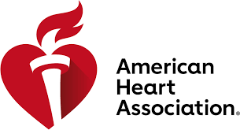

What is JReid InDeed
JReid InDeed is a group that teaches the youth on real job like experience and what it takes to be in a work enviorment of there choosin. JReid InDeed is a philanthropic organization founded by NFL player Justin Reid. It focuses on empowering under-resourced communities through technology, athletics, and nutrition programs. The organization provides mentorship, educational initiatives, and STEM opportunities for disadvantaged youth, helping them build confidence and develop essential skills. Reid also hosts events like the JReid InDeed Celebrity Golf Tournament, which raises funds for these programs. Additionally, he promotes CPR education through his summer program, Tackling Tech, in partnership with the American Heart Association.
The AHA
The American Heart Association (AHA) is the largest voluntary organization in the U.S. dedicated to fighting heart disease and stroke. Founded in 1924, it has invested over $5 billion in cardiovascular research, making it a leading force in advancing heart health. The AHA provides education, advocacy, and lifesaving training like CPR to improve public health and reduce heart-related deaths.
